把会撞的轨迹
修成不撞的轨迹
不重新打分、不重训模型：在规划器自己的控制族内改一条轨迹，用精确几何证书逐帧验证， 改坏了就撤回。五个非 TTO 底座全部显著涨分，验证集上修复 14 例、伤害 0 例。
证书只依赖几何与地图，不读答案、不读未来真值、不读官方分
冻结规划器给出一条轨迹。我们不对它的候选重新打分，也不引入打分头， 而是在规划器自己的控制族（保持 / 减速 / 加速 / 左右切入 / 左右绕行）里找一条替代轨迹； 只有当精确几何证书证明这条替代轨迹在整个预测时域内都留有间隙、且不牺牲推进进度时才接受； 一旦证书不通过，就原样退回基线轨迹。
部署态的规划器是冻结的：它只输出一条不看未来的轨迹，而在切入场景里这条轨迹会直接插进预测到的他车框。 重训规划器、训一个打分器、偷看评测答案——三条路都被部署契约挡死。我们加的东西不是分数，而是一份证明： 在规划器自己的控制族内做局部编辑，用它自己预测的他车未来逐帧前滚，只有每一帧有符号间隙都非负、且不牺牲推进进度时才提交， 否则原样退回基线。
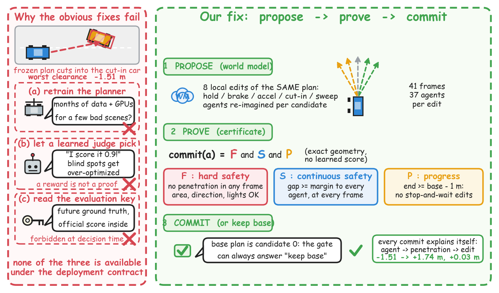
下图是完整流水线，分三段：左段是冻结的规划器（拼接相机输入 → 编码器与 BEV 特征 → DiffusionDrive 扩散头，只输出一条不看未来的基线轨迹）；中段是我们新增的 证书门控修复（免训练：规划器自己的 8 个局部编辑 构成候选库，候选条件下的世界模型预测他车反应，精确几何证书逐条处置）；右段是结果（提交后的轨迹）。 每个部件只做一件事，且每一件的输出都可以单独检查。
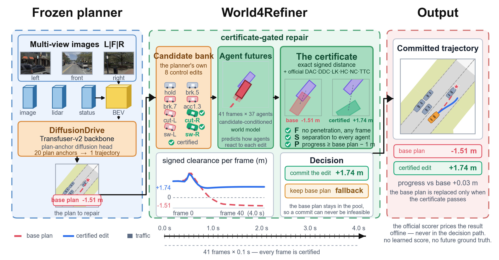
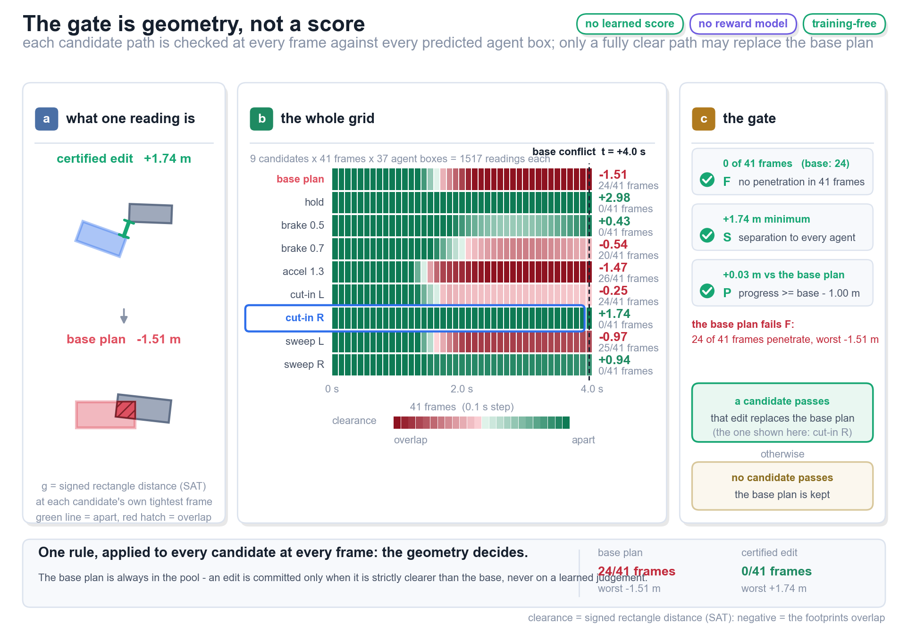

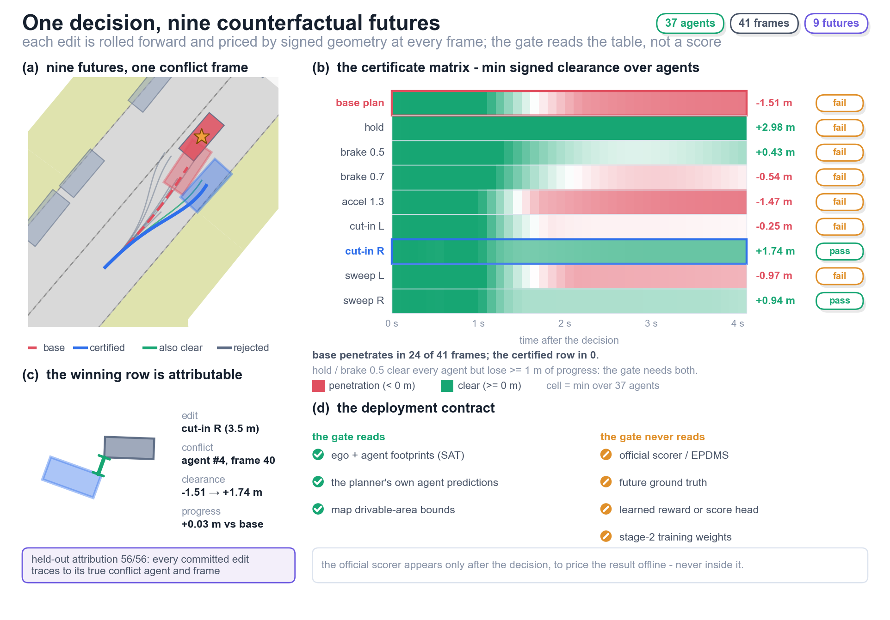
不训练、不微调。基线轨迹与它自带的场景预测（他车未来）直接作为输入， 因此本方法不占用任何训练预算。
在规划器的控制族内做参数化编辑：保持、减速、加速、向左 / 向右切入、向左 / 向右绕行。 编辑的是控制量，不是重新生成一条轨迹。
用分离轴（SAT）精确计算自车矩形与每个他车矩形之间的间隙与穿透量， 逐帧检查 41 个时刻，并叠加可行驶区与推进进度两条硬约束。
只有当编辑在全程都留有间隙、且推进进度不低于基线时才被接受； 否则原样退回基线。收益因此永远不来自"牺牲别的换来的"。
编辑算子作用在规划器输出的控制量上；候选集合固定为控制族本身， 因此不存在"换了一条新轨迹"的空间。
SAT 同时给出分离量与穿透量（有符号）。证书要求每个时刻、每个他车都有
g_t ≥ 0。
证书是硬门，不做加权打分；失败即回退，不存在"部分接受"。
整条清单里没有任何一条依赖官方评分、未来真值或训练权重， 因此可以在部署侧独立复核。
任一条不通过 ⇒ 编辑作废，轨迹退回基线；被改动的 token 里， 伤害由这条回退机制直接决定。
下面是真实场景（真实地图 + 真实前视相机帧 + 规划器自带的他车预测）。 播放分两段：t < 0 回放决策前的真实相机观测（2 Hz，插值播放，下方胶片条可点选）； t ≥ 0 进入几何回放——左屏用针孔相机把规划器缓存的预测画出来：红色半透明是基线幽灵车， 它会在冲突帧穿进切入的他车；我们自己的车就是相机，认证编辑让它始终留着间隙。右屏是航向朝上的俯视图： 8 条候选编辑的扇面、他车预测尾迹、以及证书选中的那条蓝线。回放不是观测，屏幕上始终标明。
下面三张图分别回答三个问题：改了什么（对比）、在真实场景里是什么样子（案例）、覆盖了多少种冲突形态（案例库）。
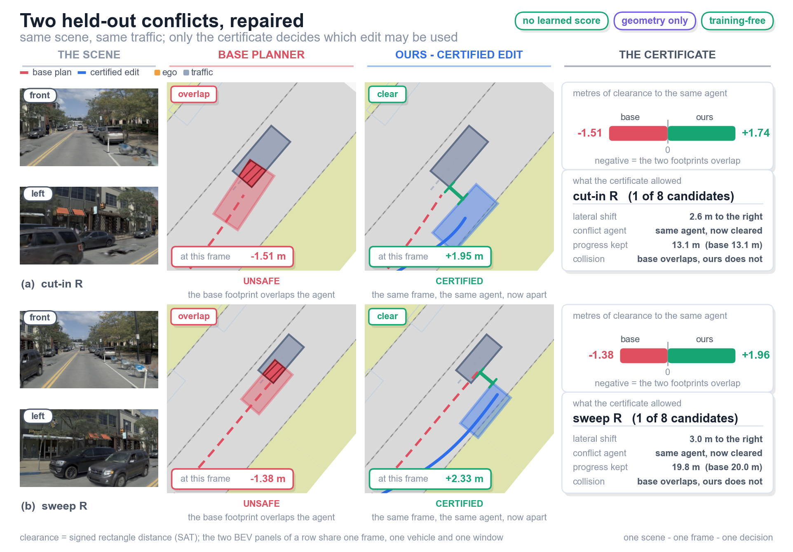
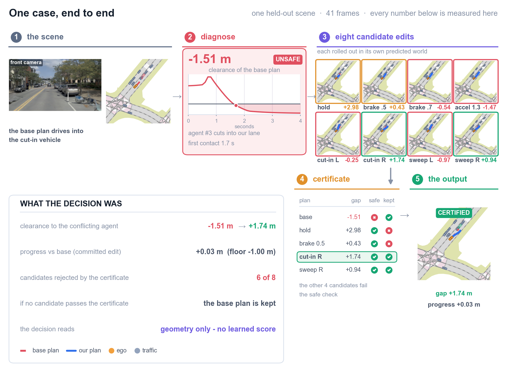

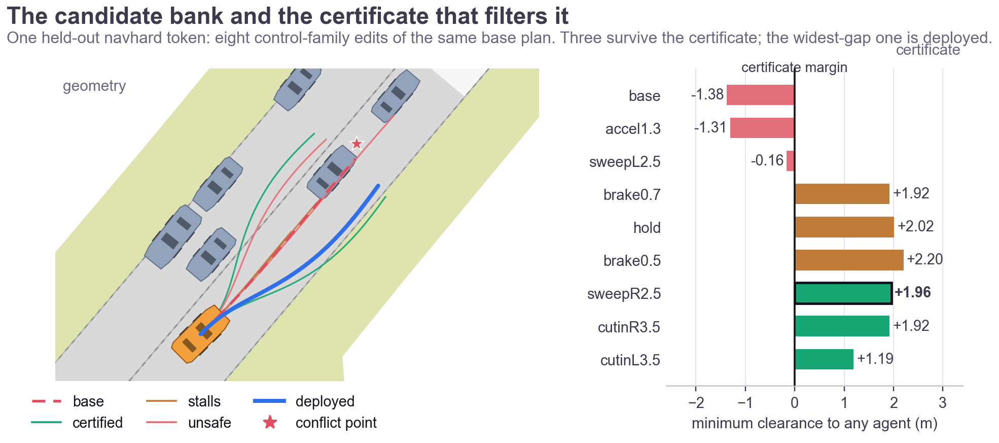
这一节回答的是消融问题：训练后的世界模型主要依赖画面里的哪一部分做判断， 以及它在多远的他车上开始反应。

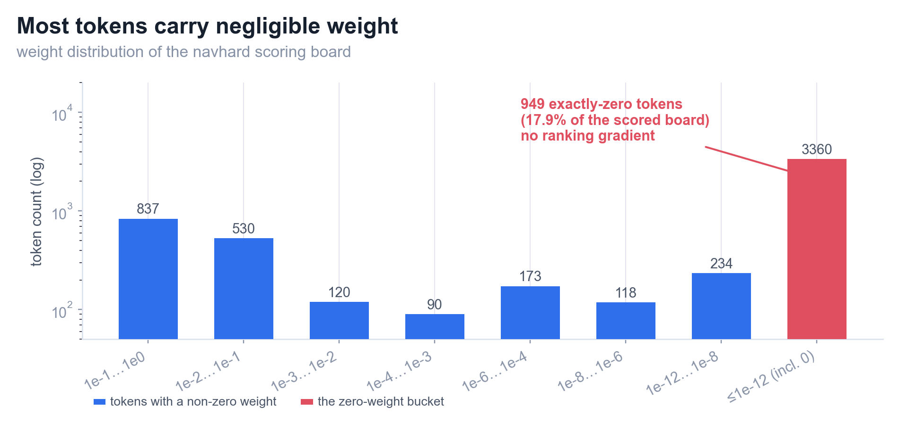
跨底座、跨基准、跨验证集三种口径各自独立测量，同一个方向、同一个量级。
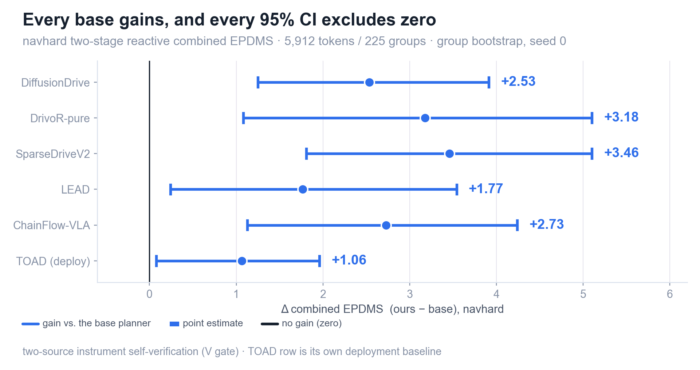
| 底座 | 基座 EPDMS | 修复后 | 增益 | 95% CI | 伤害率 % | 改判 token | 变好 | 变差 |
|---|
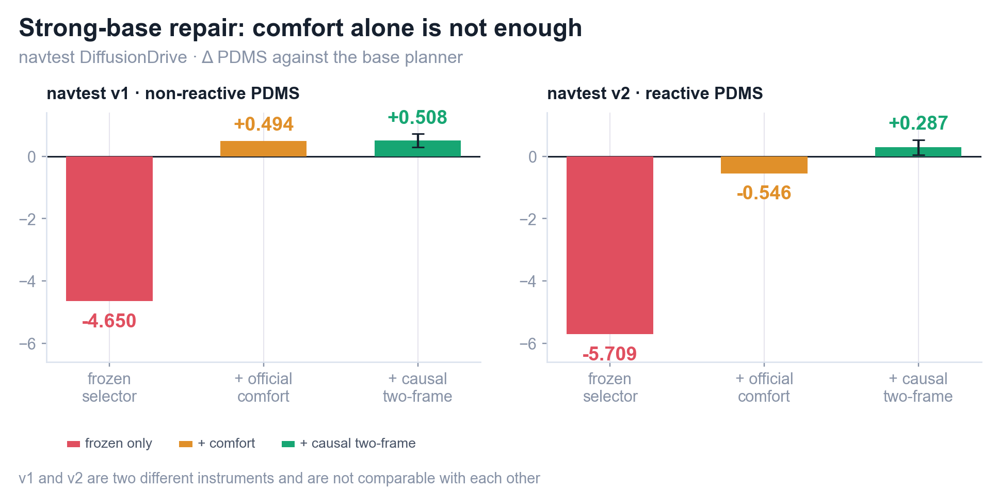
| 口径 | 基线 | 仅冻结骨干 | ＋确定性门 | ＋门＋编辑 | 最终增益 | 95% CI |
|---|
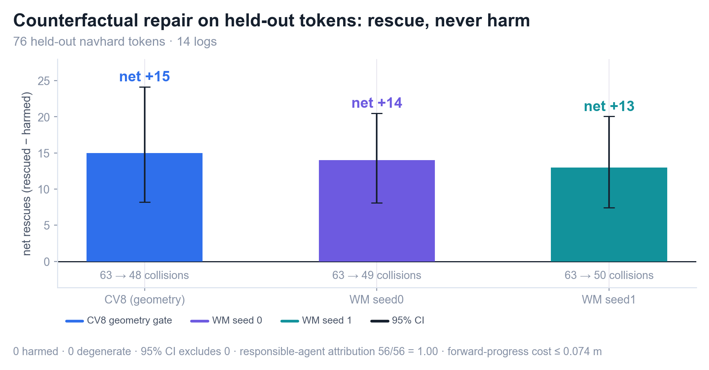
| 臂 | 触发 | 救援 | 伤害 | 净救援 | 净救援 95% CI | 碰撞数 | 平均进度变化 m |
|---|
| 种子 | WM 净救援 | WM 95% CI | WM 伤害 | 几何门净救援 | 几何门 95% CI | 几何门伤害 |
|---|


这一节列出本次测量的已知局限。每一条都对应上面某个具体测量， 而不是泛泛的"未来工作"。

本方法借鉴的是"用几何 / 证书约束测试时编辑"这条思路， 与"重新训练一个打分头"是两类不同的工作。